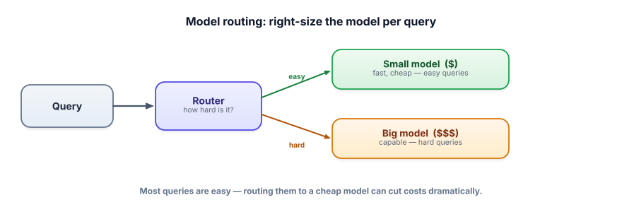

Model routing
Big models are smart but cost a lot; small models are cheap and fast.
Most real questions are easy, like order status or opening hours.
Model routing sends each question to the cheapest model that can handle it.
A cascade tries the small model first and passes the question up only if a check fails.
It only saves money if you measure how often the router gets it wrong.
A hospital does not send every patient straight to the head surgeon. A nurse at the front desk checks each person: a scraped knee goes to the nurse practitioner, a broken arm goes to a doctor, and only the rare hard case goes to the surgeon. If the practitioner finds it is worse than it looked, they pass the patient up.
| In the picture | In the real system |
|---|---|
| The nurse at the front desk | The router: rules, a small classifier, or an LLM call |
| Nurse practitioner, doctor, head surgeon | Model tiers, for example Haiku 5.5, Sonnet 5.5 and Opus 5.5 |
| Passing a patient up when it looks worse | A cascade escalating when the cheap answer fails a check |
| Sending a hard case to the wrong room | A misroute: a hard query answered badly by the small model |
Where the picture breaks. A triage nurse can examine the patient, while a router often only sees the words of the question, so it misjudges some hard cases as easy.
Going deeper
Using your most powerful model for every request is like taking a helicopter to the corner store. Most queries are easy; routing them to a small, cheap model — and reserving the big one for hard cases — can cut costs dramatically with little quality loss.
Not every query needs your best model
Models vary enormously in cost and speed: a small model can be many times cheaper and faster than a frontier one. And real traffic is mostly easy — greetings, simple lookups, short classifications — interspersed with a minority of genuinely hard requests. Model routing exploits this: a lightweight decision sends each query to the cheapest model that can handle it, escalating to a bigger model only when needed. You pay top dollar only for the requests that actually require it.

Model routing chooses which model handles each request. A router can be rules (length, keywords, task type), a small classifier, or an LLM call itself. A cascade is a common pattern: try the cheap model first, and escalate to a bigger one only if the cheap model is unsure or its output fails a check. The goal is to move along the cost/quality frontier — getting most of the quality for a fraction of the cost.
Start with cheap heuristics; escalate only when needed. (Free models of different sizes via Ollama.)
def route(query):
# cheap heuristic router: short/simple → small model
if len(query) < 200 and not any(w in query.lower() for w in ["analyze", "explain why", "prove", "design"]):
return "small"
return "big"
def answer(query):
# CASCADE: try small first, escalate if it's not confident / fails a check
out = call("qwen2.5:1.5b", query) # small, cheap, fast
if looks_uncertain(out) or not passes_checks(out):
out = call("qwen2.5:7b", query) # escalate to a bigger model
return out
# Measure: what % escalates, and is quality on the small path acceptable? (Track 6)Even a crude router captures most of the savings, because the easy majority is genuinely easy. The art is tuning the threshold so you don’t send hard queries to the small model (quality drop) or easy ones to the big model (wasted money).
Assumptions (ours): 1,000,000 requests a day, 1,500 input and 200 output tokens each, and an offline eval showing 75% of traffic (order status, returns, sizing) is answered at your quality bar by the small tier. Prices from Anthropic models overview.
- Everything on claude-sonnet-5-5 ($2 / $10). 1,500 x $2/M + 200 x $10/M = $0.003 + $0.002 = $0.005 a request, $5,000 a day.
- Classifier routing. 75% to claude-haiku-5-5 (from $0.10 / $0.50): 1,500 x $0.10/M + 200 x $0.50/M = $0.00025 a request; 750,000 x $0.00025 = $187.50. 25% to Sonnet: 250,000 x $0.005 = $1,250. Total $1,437.50 a day, a 71% cut.
- Cascade instead. Send everything to Haiku first, then escalate when a check fails (schema invalid, low retrieval score, refusal). Suppose 30% escalate. Haiku for all: 1,000,000 x $0.00025 = $250. Sonnet for 300,000: $1,500. Total $1,750 a day (65% cut), and escalated users pay a latency tax for the double call.
- Price the router's mistakes. If the classifier wrongly sends 2% of all traffic (20,000 hard queries a day) to Haiku and each bad answer costs a $3 support contact (assumption), that is 20,000 x $3 = $60,000 a day, far more than the $3,562 saved. Routing only works if the misroute rate is measured and tiny, or if a cheap check catches misroutes.
- What to measure every week. Escalation rate, quality on each path against the golden set, and cost per resolved conversation (not per call). Research systems like FrugalGPT and RouteLLM report large savings at similar quality, but on their benchmarks; your traffic decides yours.
Route by task, not by habit
Compare sending everything to your best model against routing each task to the cheapest one that can still do it.
- Models vary hugely in cost/speed; most queries are easy — don’t use your best model for all of them.
- Routing sends each query to the cheapest model that can handle it (rules, a classifier, or an LLM judge).
- A cascade tries cheap first and escalates only on low confidence or a failed check.
- This moves you along the cost/quality frontier — most of the quality for a fraction of the cost.
- Measure the escalation rate and small-path quality; tune the router with data, not vibes.
Your chatbot uses a frontier model for everything; 80% of traffic is greetings and simple FAQs. What’s the highest-ROI change?
What's the idea behind model routing?
A router sends 70% of traffic to a cheap model and the average eval score drops only 1 point. Why can this still be a bad change?
1. Give two simple, cheap signals a router could use to guess query difficulty.
2. What’s the risk of routing too aggressively to the small model, and how do you detect it?
3. Why is a cascade (try-cheap-then-escalate) sometimes better than a one-shot difficulty classifier?
▸ Show solutions & reasoning
1. Cheap signals: query length (short tends to be simpler), presence of reasoning keywords (“analyze,” “prove,” “design,” “why”) or task type (classification vs open-ended generation), the domain/category (FAQ vs novel request), and whether the answer needs tools/retrieval. None are perfect, but together they cheaply separate the easy majority from the hard minority. You can also use a tiny classifier trained on labeled examples.
2. The risk is quality loss — hard queries sent to the small model get worse answers, which you might not see in aggregate metrics. Detect it by measuring quality on the small-model path against your eval set (Track 6), and by monitoring online signals (escalations, retries, thumbs-down, handoffs) for the small-model segment. If small-path quality dips below your bar, tighten the router so fewer/only-truly-easy queries go small.
3. A one-shot classifier must judge difficulty before seeing any answer, and it’s imperfect — it’ll misroute some hard queries to the small model. A cascade lets the small model actually try, and you escalate based on its real output (low confidence, failed validation, refusal). That uses evidence rather than a prediction, so it can catch cases the classifier would have misjudged — at the cost of an extra call when escalation happens. Use a cascade when the cost of a wrong answer outweighs the occasional double call.
Routing is really about navigating a frontier: for any task, there’s a curve trading cost against quality, and your job is to sit at the best point for your requirements. The key insight is that the curve is rarely linear — for easy queries, a small model gets you to ~99% of the quality at ~10% of the cost, so forcing them through a frontier model is almost pure waste. The savings come from recognizing that quality demand is heterogeneous: different requests need different points on the curve, and a single model choice for all of them is a compromise that overpays for the easy and (if you picked small) underdelivers on the hard.
Two practical extensions. First, routing composes with everything else in this track — you cache first (skip the call), then route (right-size the call), then within the chosen model trim tokens and stream. Second, the router itself has a cost and an error rate: a cheap heuristic is free but coarse; an LLM-as-judge router is accurate but adds a call; a small trained classifier is a nice middle.
Choose the router sophistication that pays for itself, and — as always — measure: track the escalation rate, the cost saved, and the quality on each path, so routing is a tuned, monitored system rather than a guess. Done well, model routing is frequently the second-biggest cost lever after caching, and it lets you offer frontier-grade quality where it matters while keeping the bill sane.
labs/06_evals.pyFree and offline once set up: Ollama with qwen2.5:7b, plus the packages in labs/README.md. From the course folder:
python labs/06_evals.pyWhat to look for: The lab does not contain a router. What it gives you is the tool that decides whether routing is safe: the per-case regression gate comparing two variants. Point the two variants at two model sizes (for example qwen2.5:7b and a smaller local model if you have one) and count the cases where the small one fails; that per-case failure list is your misroute risk.
Small samples: these labs use 5 to 20 cases so they run in minutes on a laptop. Where they report a rate, they print n and a 95% Wilson interval. Read them as a demonstration of the mechanism, not as a measured rate for your system; for that you need hundreds of cases and several seeds.
▸ Recorded output (our run, 2026-11-03, qwen2.5:7b on a laptop GPU)
5) Judge position bias: same pair, swapped order
How long do card refunds take? order1 picked B, order2 picked B -> FLIPPED
Return window for electronics? order1 picked B, order2 picked A -> consistent
Express shipping price? order1 picked B, order2 picked A -> consistent
When is standard shipping free? order1 picked A, order2 picked B -> consistent
Duplicate charge reversal time? order1 picked A, order2 picked B -> consistent
consistent verdicts: 4/5 = 80% (95% CI 38%-96%) correct in both orders: 2/5 = 40% (95% CI 12%-77%)
n=5 pairs is a demo, not a measurement of this judge's bias: the intervals span most of 0-100%.
Look: with no reference passage in the judge prompt, the judge has to guess which number is right.
Always judge both orders and count a win only when both agree; give the judge the reference.
6) How wide is the error bar on 12 cases?
v1 accuracy 11/12 = 92% (95% CI 65%-99%) (Wilson interval)
At n=400 the same accuracy would be roughly +/- 2.7%
{"v1_correct": 0.917, "regressions": 12, "judge_consistent": 4}Your numbers will differ a little run to run. Full log: labs/outputs. Source: labs/06_evals.py.
Warm-up. Requests average 2,000 input and 300 output tokens. What is the per-request saving of moving one request from claude-sonnet-5-5 to claude-haiku-5-5?
▸ Solution
Sonnet: 2,000 x 2/M + 300 x 10/M = $0.004 + $0.003 = $0.007. Haiku (up-to-100K-token rate): 2,000 x 0.10/M + 300 x 0.50/M = $0.0002 + $0.00015 = $0.00035. Saving $0.00665 a request, about 95%.
Transfer. Your cascade escalates when the small model's JSON fails validation. Escalation rate is 8% in testing but 35% in production. List three things you would check, in order.
▸ Solution
1) The traffic mix: pull the escalated traces and group by intent; production may contain question types the test set lacked. 2) The check itself: is validation failing on harmless formatting (extra fields, trailing text) that a constrained-decoding schema or a lenient parser would fix? 3) The small model's inputs: are production prompts longer (more history or context) so the small model loses the instructions? Fixes follow from the finding: add the new intents to the golden set, use schema-constrained output, or route long-context requests straight to the big model.
Stretch. Write the break-even condition for a cascade versus always using the big model, with c_s and c_b the per-request costs and e the escalation rate. With c_s = $0.00035 and c_b = $0.007, what escalation rate makes the cascade pointless?
▸ Solution
Cascade cost per request = c_s + e x c_b. Big-only cost = c_b. The cascade wins when c_s + e x c_b < c_b, i.e. e < 1 - c_s / c_b. Here 1 - 0.00035 / 0.007 = 1 - 0.05 = 0.95. So on cost alone the cascade wins unless 95% of requests escalate. In practice the limit is latency and quality, not cost: escalated users wait for two calls, so you also cap e by your p95 latency target.
Junior What is model routing and why do teams use it?
▸ Model answer
Routing picks which model handles each request. Most traffic is easy, like greetings, lookups and short classifications, and a small model handles it well at a fraction of the price and often faster. Hard requests, like multi-step reasoning or long documents, go to a bigger model. The router can be simple rules, a small trained classifier, or a cascade that tries the small model first and escalates on a failed check. Teams use it because it can cut cost a lot while keeping quality where it matters, as long as they measure quality per path.
Mid How do you build and validate a routing classifier?
▸ Model answer
I label a few thousand real requests with the cheapest model that meets the bar, by running both models on them and judging the outputs against the golden-set rubric. That gives training labels. I train a small classifier on cheap features or embeddings, and I tune its threshold for low false-easy rate, because sending a hard query to the small model is the costly error. I validate on a held-out set by segment, then canary it on a slice of live traffic and compare thumbs-down, escalations and cost per resolved task against control before going wide.
Senior Your provider releases a new small model that is cheaper and better. How do you adopt it without breaking the router?
▸ Model answer
The router's thresholds were tuned for the old small model, so the routing boundary is now wrong in a safe direction: we are probably sending too much to the big model. I run the new model through the golden set by intent, relabel which intents it handles, and retune the threshold. Then I canary it with both quality and cost dashboards and keep the old route as instant rollback. I also pin model IDs rather than aliases so the switch is a deliberate change that goes through the eval gate, not a silent upgrade.
So far we’ve optimized around the model. Now we make the model itself cheaper and faster to run — crucial when you self-host. Next: quantization.
In one line: Send easy questions to a cheap model and save the big one for the hard ones, then check the router's mistakes.